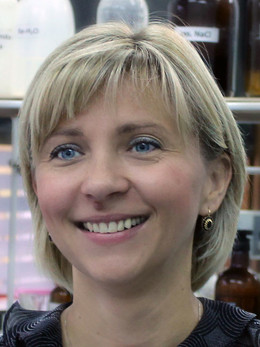
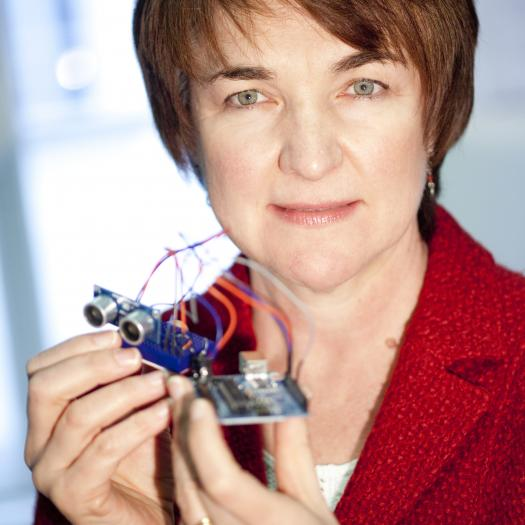
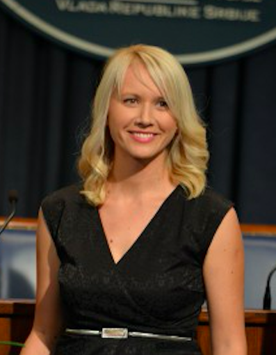
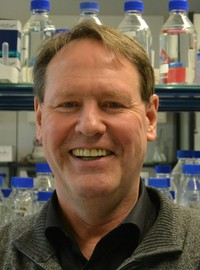
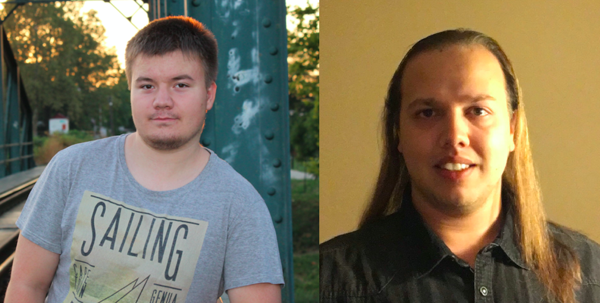

News
Summer School at Croatian National Television
August 1st 2019
S3 camp had a visit from the Croatian national television (HRT)! They prepared a report about the Summer School and have interviewed our participants, project leaders and organizers. You can find the video here (in Croatian).
Lecture announcement: Vladimir Dzyuba
April 8th 2019

After two busy years, Vladimir Dzyuba is returning to the S3, this time in his new role as a lecturer!
Dr. Dzyuba is a research engineer at Flanders Make, a strategic research centre in Flanders, Belgium, which focuses on innovation in manufacturing. He has been working on such topics as predictive maintenance, intelligent product design, and expert knowledge discovery. He obtained a PhD in Computer Science at KU Leuven, Belgium. His research focused on interactive data analysis, or using artificial intelligence to help people make sense of huge amounts of data. During his studies, he also frequently worked on sports analytics.
During this year’s S3 edition, he is going to give us a speech on self-driving cars. Don’t miss the chance to be a part of this lecture and join us in Pozega!
Sponsorship from EMOTIV
March 25th 2019
We are very happy to share with you that the Summer School of Science got a generous support from EMOTIV - the leaders in wireless EEG brain monitoring technology!
Thanks to EMOTIV's donation of EPOC+ headset, our students will have the opportunity to get hands-on experience in working with this cutting-edge technology.
Lecture announcement: Ivanka Jerić
March 19th 2019
It is our great pleasure to announce our next lecturer at S3 2019 - Dr. Ivanka Jerić from Ruđer Bošković Institute, Croatia!
Currently the head of the Laboratory for biomimetic chemistry, Dr. Jerić obtained her Ph.D. at University of Zagreb, and has since gained both rich research and teaching experience. She is interested in mimicking some of the important nature’s components, and the main goal of her group is development of strategies to assemble structurally complex, polyfunctional molecular architectures.
This lecture is certainly something you don't want to miss during this year's S3 edition! Apply for S3 or simply join us in Pozega this summer as all lectures are open to public.
Lecture announcement: Innovation Lab project Pokerbot
March 16th 2019
Thanks to collaboration with Faculty of Engineering Science at KU Leuven in Belgium, we will host yet another project developed within the Innovation Lab, an initiative to enthuse high school students to become engineers and scientists.
With our project leader Sebastijan, all S3 camp participants will get immersed into the world of artificial intelligence and probabilities through project Pokerbot: Build your own artificially intelligent poker player. 
After putting together their pokerbots and teaching them the playing strategies, the students’ robots will compete against each other in a poker tournament.
Don't miss your chance to apply for S3 2019!
Lecture announcement: Geraldine Fitzpatrick
March 13th 2019
Information technologies (IT) are drastically transforming healthcare, but will doctor-patient interaction soon be replaced by computer-human interaction?
Prof. Geraldine Fitzpatrick leads the Institute for Technology Design and Assessment and the Human Computer Interaction group at Vienna University of Technology (TU Wien). Her research is at the intersection of social and computer sciences, using sensor-based technologies in everyday contexts.
At S3++, we will have the honor of hosting Prof. Fitzpatrick, where she will talk about exciting possibilities that future IT systems could provide in healthcare, but also about the challenges in successfully implementing them. Apply for S3/S3++, or simply join us in Pozega this summer as all lectures are open to public.
Dominik "Dino" Knežević Scholarship
March 11th 2019
It is our pleasure to announce that this year we will be able to support participation of two students at S3/S3++ through Dominik "Dino" Knežević Scholarship! The priority will be given to students of Matija Mesić Gymnasium in Slavonski Brod, Croatia. In case there are no successful candidates from that Gymnasium, it will be awarded to other students from Croatia or abroad, according to the criterion of need. You can find more details here (in Croatian).
Lecture announcement: Dragana Ilić
March 7th 2019
S3 2019 will have the honour to guest Dr. Dragana Ilić, an astrophysicist and winner of L’Oreal UNESCO For Women in Science award!
Currently a professor at the University of Belgrade, Dr. Ilić obtained her Ph.D. in astronomy from Universities of Belgrade and Padova. Her research is focused on spectroscopy of active galactic nuclei and description of black holes in centres of galaxies.
The lecture, based on her rich teaching and research experience, is certainly something you don't want to miss during this year's S3 edition! Apply for S3/S3++, or simply join us in Pozega this summer as all lectures are open to public.
Lecture announcement: Michalis Charilaou
March 3rd 2019

It is our great pleasure to announce that Dr. Michalis Charilaou will be our first lecturer at the S3++ camp, where he will speak about the dark past and bright future of nanomagnetism.
Dr. Charilaou obtained his PhD at ETH Zurich, where he did interdisciplinary research in Magnetism, and is now Assistant Professor in Physics at University of Louisiana at Lafayette. His research encompasses a wide range of topics from permanent magnets for energy conversion to magnetotactic bacteria to the exotic world of nanomagnetism. Beyond his enthusiasm for magnetism, Dr. Charilaou is also a passionate musician. Read more about his research and listen to his music on his personal website.
In his lecture, Dr. Charilaou will present you the recent research in nanomagnetism and why it is essential for key present and future technologies.
All our lectures are open to public and streamed online, so do not forget to join us!
Lecture announcement: William F. Martin
February 26th 2019
It is our great pleasure to announce that Prof. William F. Martin is going to be our lecturer this summer at S3 camp!
Prof. Martin has completed his undergraduate degree in Biology at the University of Hannover and completed his PhD in Genetics at the Max Planck Institute for Plant Breeding Research in Cologne. He currently works at the Institute for Molecular Evolution and at the University of Düsseldorf as a professor.
Prof. Martin has left the greatest mark in explaining the main processes in two of the most important evolutionary transitions - endosymbiosis in the origin of eukaryotes and geochemistry in the origin of life. His two papers - Hydrogen Hypothesis on Origin of Mitochondria and Origin of Life and Hydrothermal Vents - had the great impact on modern science.
You don't want to miss this exciting lecture. Apply for S3 here!
Applications open!
February 15th 2019
Applications for S3/S3++ are now officially open! You can apply for the School from February 15th til May 1st 2019, by filling in the online application form. You will also need to upload a motivation letter and provide us with contact information of one of your teachers. If you are also applying for scholarship, you will need to upload a separate Scholarship application letter. Once all applications are reviewed, a certain number of applicants will be selected for the interview.
You can find the link to application form, as well as detailed information about application procedure, scholarships and School fees here.
Lecture announcement: Pearl Pu
February 12th 2019

We are very happy to announce our first speaker at S3 camp 2019, an ACM Distinguished Speaker Dr. Pearl Pu!l
A native from Shanghai, she obtained her degrees in the USA and is currently a group leader at EPFL in Lausanne, Switzerland. Dr. Pu’s research is multi-disciplinary and focuses on issues in the intersection of human-computer interaction, artificial intelligence, and behavioral science. She is well known for designing novel user study experiments and pioneering user-centered recommender technology. Dr. Pu is the recipient of numerous awards, as well as the co-founder of three startups, for which she received the 2008 CHINICT Award and the 2014 Worldwide Innovation Challenge Award.
All S3 evening lectures are open to the public, so join us this summer in Pozega and enjoy in the inspiring talk “Emotion Analysis in Natural Language” by Dr. Pu!
New organizers on board: S3++ camp
January 21st 2019
After introducing the S3 camp, it is time to introduce the S3++ camp organized by Dunja Vucenovic and Leonardo Pierobon, which will take place from August 8th - 18th 2019.
Dunja is a PhD student in Computational Regulatory Genomics at Imperial College London. She has been part of the school for impressive 13 years now, as a participant, project leader, technical assistant and now for the first time an organizer. Leonardo is a PhD student in Laboratory for Metal Physics and Technology at ETH Zurich. He participated as a project leader once, organized the S3++ last year and is more than enthusiastic to be an organizer again.
This year we have many interesting projects and lectures for you, so stay tuned!
New (old) organizers on board: S3 camp
January 17th 2019
It is that time of the year again! Time to announce that the S3 camp will be held from July 28th until August 7th 2019, and it is going to be organized once again by Nikolina Šoštarić and Dora Grbavac.
Nikolina is a PhD student at KU Leuven and this will be her third time organizing the Summer School. She has also participated as a swapshop and project leader. Dora is a Molecular Biology student at the University of Zagreb. She is one of a few people that has taken almost every role possible at S3: from a participant to the organizer.
Continuing our last year's novelty, the duration of the S3 camp will once again be 10 days! üòÄ
Stay tuned to find out about other surprises we are preparing for you!
Summer School of Science visited by the Croatian minister of labour
August 2nd 2018
Yesterday all eyes were on the Summer School of Science! We had a great pleasure of hosting Marko Pavić - Croatian Minister of Labour and Pension System, Tome Antičić - the state secretary for science, and Krešimir Čanić - a board member of the Croatian National Foundation for civil Society Development, in Požega. Our participants and mentors demonstrated everything they have achieved so far - what a determined and motivated young mind can achieve left a very strong impression on both the minister and the state secretary.
The visit was greatly covered by both national and local news! You can see some of the articles below (all the articles are in Croatian):
National television HRT,
Jutarnji list,
Index,
Vecernji list,
tPortal,
net.hr,
Lider media,
Pixsell,
RVA,
Pozega.eu,
Pozeski vodic - opening,
Pozeski vodic,
Slavonski.hr,
Pozeska kronika,
eZadar,
Report of Pozega Catholic gymnasium
Otvoreni dan ljetne škole znanosti
S3 open days
May 5th 2018
[English version below]
Ljetna škola znanosti ove godine obilježava 6. obljetnicu održavanja u gradu Požegi. Stoga će ponovno otvoriti svoja vrata svim zainteresiranim učenicima i roditeljima. Organizirane su četverosatne radionice za učenike osmih razreda osnovnih škola i svih razreda srednjih škola na području Požeško-slavonske županije. Sudjelovanje na ovim radionicama jedinstvena je prilika da učenici na jednostavnim eksperimentima, pod nadzorom mladih mentora, dobiju uvid u znanstvene metode. Sudjelovanje u programu je besplatno, a radionice će biti održane na hrvatskom jeziku. Posjetite nas u prostorima Gimnazije Požega 4.8. i 14.8.! Više informacija o programu i prijavama možete pronaći ovdje.
This year, the Summer School of Science celebrates its 6th anniversary of being located in the city of Pozega! To mark this, the School will open its doors to all interested students and parents. We organized the 4 hours-long workshops for the students of the 8th grade od primary school, as well as for the students of all grades of high school in the Pozesko-slavonska county. Participation on the workshops is the unique opportunity for the students to get an insight into the simple experiments and scientific methods, being supervised by the young mentors. Participation is free and the workshops will be held in Croatian. Visit us in the Gymnasium of Pozega on 4th and 14th of August! More information about the program and the applications are here (in Croatian only).
Lecture announcement: Ena Selendić
April 6th 2018
What makes certain people successful? Is being good at math and science sufficient to succeed? This year for the first time, we will have a lecture on soft skills, in which Ena Selendic will talk about social skills you need in order to have a successful career.
Currently a graduate student at the Faculty of Economics and Business, University of Zagreb, Ena has attended several courses on peace studies and conflict resolution at the Center for Peace Studies Zagreb, where she learned that the key to success is effective communication with your peers and colleagues.
Ena is eager to share her knowledge with you and give you some invaluable advice on how to become successful. You don't want to miss this lecture! Apply for the Summer School of Science here.
Lecture announcement: Milan M. Ćirković
April 16th 2018

We are honoured to announce our speaker Milan M. Ćirković, a research professor at the Astronomical Observatory of Belgrade and a research associate of the Future of Humanity Institute at Oxford University.
His primary research interests are in the fields of astrophysical cosmology, astrobiology, as well as philosophy of science. Prof Ćirković will give us a speech - "We are alive today! Therefore, we face greater (global) risk".
You don't want to miss this lecture - apply for the Summer School of Science here! Lectures are also open for the public, so you can join us in Požega or follow the live stream.
New scholarship available
April 15th 2018
It is our pleasure to announce that, as of this year, Dominik "Dino" Knežević Scholarship will be available for one student accepted for participation at S3. The priority is given to students of Matija Mesić Gymnasium in Slavonski Brod, Croatia. You can find more details here (in Croatian).
Lecture announcement: Ivančica Bogdanović Radović
April 6th 2018
It is our pleasure to host Dr. Ivančica Bogdanović Radović, a senior scientist in the Laboratory for Ion Beam Interactions at the Ruđer Bošković Institute.
She is Management Committee member for the COST Action CA16101 MULTi-modal imaging of FOREnsic SciEnce Evidence (MULTI-FORESEE) - tools for Forensic Science whose main objective is to promote innovative, multi-informative imaging solutions/technology to analyse forensic evidence which include fingermarks, hair, paint, biofluids, digital evidence, fibers, etc. Alongside MULTI-FORESEE action she is a project leader of the HrZZ project Development of the capillary microprobe for MeV SIMS with application on analysis of biological samples.
All S3 evening lectures are open to public, so join us this summer in Pozega and enjoy this talk!
Lecture announcement: Florian Raible
March 29th 2018
Have you ever thought of the correlation between love life, hormone system and the lunar cycle? If this triggers your mind, we have some good news for you!
This year we will have the honour to guest Dr Florian Raible, a professor at University of Vienna and a group leader at the Max F. Preutz Laboratories. His areas of research are hormone biology, marine genetics, neurobiology and bioinformatics. Dr Raible will give us a speech named: 'A time to love, a time to die - how the moon orchestrates life in the sea'.
Don't miss this interesting lecture - apply for the Summer School of Science here! As the lectures are open for the public, you can join us in Pozega or follow the live stream.
Lecture announcement: Murray Stewart
March 20th 2018
This year we will have the honour to host Murray Stewart. Dr. Stewart joined the Laboratory of Molecular Biology in Cambridge, UK, after he had worked at the University of New South Wales on the structure of carbon fibers. Alongside working in the Laboratory of Molecular Biology, he is working at the University of Cambridge.
His current research focuses on two main areas. The first is to address the molecular mechanism of the
All S3 evening lectures are open to public, so join us this summer in Pozega and enjoy this talk! If you want to become our participant, you can apply here!
Lecture announcement: Eszter Farkas
March 16th 2018
S3 2018 will have the honour to guest Dr Eszter Farkas, a neurobiologist and winner of International Rising Talents 2016 award by L’Oréal-UNESCO For Women in Science, for the field of “Technology and engineering: innovations that could change the face of medicine”.
After obtaining a rich international experience, Prof Farkas presently leads the Laboratory of Experimental Neuroimaging at the Department of Medical Physics and Informatics at the University of Szeged in Hungary.
All S3 evening lectures are open to public, so join us this summer in Pozega and enjoy this talk! If you want to become our participant, you can apply here.
Lecture announcement: Lorenzo Di Michele
March 10th 2018

If DNA Nanotechnology and Synthetic Biology sound interesting, then we have a lecture for you at S3 2018.
This year we will have the honor to host Lorenzo Di Michele - an exceptional young scientist who gained his PhD in Physics at the University of Cambridge and Corpus Christi College. Some of his currently active projects include: artificial DNA receptors for signal transduction across biological membranes, 3D Networks of DNA nanostructures as cell-organelle mimics, DNA-mediated fusion of live biological cells and liposomes for delivering gene-editing.
You don't want to miss this exciting lecture. Apply for S3 here!
Lectures announcement: Harold Thimbleby
March 3rd 2018
This year we will have the honour to guest Harold Thimbleby, a professor at the Swansea University in Wales, known for his works on user interface design within the human computer interaction. His passion is designing dependable systems to accommodate human error, especially in healthcare.
Being an excellent speaker, Dr Thimbleby has presented over 600 debates, talks, keynotes, workshops and seminars, and is an ACM Distinguished speaker. On this year’s S3, he will give not one, but two talks: “After cancer, errors kill more people. Computers have everything to do with it” and “Missed solutions to WWII Enigma design weaknesses”.
Everyone is welcome to either join us in Pozega this summer, or follow the live streaming of lectures. If you want to become our participant, apply here!
Lecture announcement: Arnold O. Benz
February 20th 2018

This year we will have the honor to host a lecture by Prof. Dr. Arnold Benz.
Arnold Benz studied physics at ETH Zurich. After gaining his Master degree, he did his Ph.D. at Cornell University, NY, USA, with Thomas Gold on the acceleration of the solar wind. In 1972, he moved back to ETH where he was appointed professor in 1993. His interdisciplinary work on science and religion was awarded by an honorary doctor of the University of Zurich.
He was president of Division II (Sun and Heliosphere) of the International Astronomical Union, president of Commission 10 (Solar Activity) of the IAU, president of the Swiss Society for Astrophysics and Astronomy, and a member of several more national and international committees. His achievements include the first detailed survey and interpretation of solar flare radio emissions in decimeter radio waves, theory for particle acceleration in flares, and the relation of thermal X-ray and non-thermal X-ray emissions of solar and stellar activity.Present research focuses on star and planet formation using data of the Herschel Space Observatory and on high-energy diagnostics of solar flares. The latter is connected to the involvement as a Senior Advisor in the STIX project on Solar Orbiter at the FHNW in Windisch.
All S3 evening lectures are open to public, so join us this summer in Pozega and enjoy in the talk by Dr. Benz!
Applications open!
February 15th 2018
Applications for S3 are now officially open! You can apply for the School from February 15th til May 1st 2018, by filling in the online application form. You will also need to upload a motivation letter and provide us with contact information of one of your teachers. If you are also applying for scholarship, you will need to upload a separate Scholarship application letter. Once applications are reviewed, a certain number of applicants will be selected for the interview.
You can find the link to application form, as well as detailed information about application procedure, scholarships and new fees here.
Lecture announcement: Amaury Triaud
February 11th 2018
Have you heard about the recent discovery of TRAPPIST-1, a system with the most promising planets for search of biological evidence beyond our Solar system? Dr Amaury Triaud, one of the discoverers of TRAPPIST-1, will visit S3 2018 and talk about the hunt for universal life!
A regular visitor to observatories in the Atacama desert, Dr Triaud is the discoverer of over one hundred exoplanet planets (planets which orbit stars other than the Sun). His current research focuses on circumbinary planets (planets with two suns), and on identifying planets that have sizes and temperatures similar to Earth, and that orbit around the smallest stars in our Galaxy.
All evening lectures are open to public, so join us this summer in Pozega and enjoy in this inspiring talk!
New technical assistants on board
January 29th 2018
The time has come to present the technical assistance of this year’s Summer School! Technical assistants this year will be Mario Zelić (on the S3 camp) and Grgur Šimunić (on the S3++ camp).
Mario is currently a first-year student of the Faculty of Medicine in Zagreb. He has been a participant of the Summer School two times and is now eager to challenge himself as a technical assistant. Grgur is currently working towards his PhD degree at the Ruđer Bošković Institute in Zagreb. He has lead two workshops on the Summer School of Physics in the past years and now he will try out his new role.
Stay tuned for more updates!
New organizers on board: S3++ camp
January 20th 2018
Just a few more months of waiting and the beautiful experience of participating in the S3++ camp begins! While you are impatiently waiting for time to pass, new organizers:
Anna-Maria Krizanac, a Geophysics student at the Faculty of Science in Zagreb, and Leonardo Pierobon, a PhD student at ETH Zurich,
teamed up to give their best so you could have the best summer camp experience. If you are curious about what surprises we have for you, stay tuned to find out more!

New organizers on board: S3 camp
January 18th 2018
It is the time to announce that the S3 camp this year will be held from July 29th until August 8th, and it is going to be organized by Nikolina Šoštarić and Dora Grbavac.
Nikolina is a PhD student at KU Leuven and it is her second time having this role, but she has also participated as swapshop and project leader. Dora is a Molecular Biology student at the University of Zagreb. She already had a try as participant, swaphop leader and technical asisstant but this will be her first time organizing the school.
As you have maybe noticed, the duration of the S3 camp has been extended to 10 days! üòÄ
Stay tuned to find out about other surprises we are preparing for you!
JOIN US AT THE OPEN DAY OTVORENI DAN LJETNE ŠKOLE ZNANOSTI
May 27th 2017
[Croatian version below / Hrvatska verzija ispod]
This year, the Summer School of Science S3 celebrates its 5th anniversary of being located in the city of Požega! To mark this anniversary, the School will open its doors to all interested students and parents on July 25th and August 1st in the Požega Gymnasium.
Within the scope of the Open day, we are organizing the 4 hours-long workshops for the students of the 8th grade of primary school, as well as for the students of all grades of high school in the Požeško-slavonska county. Participation on these workshops is the unique opportunity for the students to get an insight into the simple experiments and scientific methods, being supervised by the young mentors. Participation is free of charge, and the workshops will be held in Croatian.
All information about the projects and applications can be found here (in Croatian).
Ljetna škola znanosti ove godine obilježava 5. obljetnicu održavanja u gradu Požegi! Povodom ove obljetnice, Škola će otvoriti svoja vrata svim zainteresiranim učenicima i roditeljima u dva termina, 25. srpnja i 1. kolovoza, u prostorima Gimnazije Požega.
U sklopu Otvorenog dana, organizirane su radionice u trajanju od četiri sata za učenike osmih razreda osnovnih i svih razreda srednjih škola na području Požeško-slavonske županije. Sudjelovanje na ovim radionicama jedinstvena je prilika da učenici na jednostavnim eksperimentima, pod nadzorom mladih mentora, dobiju uvid u znanstvene metode. Sudjelovanje u programu je besplatno, a radionice će biti održane na hrvatskom jeziku.
Sve informacije o projektima i prijavama možete pronaći ovdje.
Lecture announcement: Toby Walsh
May 3rd 2017
It is our great honour to introduce another S3 speaker, a leading researcher in Artificial Intelligence (AI) and a “rock star” of digital revolution, Dr. Toby Walsh!
Dr. Walsh is currently a professor at UNSW Sydney and a group leader at Data61, Australia, as well as a guest professor at TU Berlin. He has previously held research positions in England, Scotland, France, Germany, Italy, Ireland and Sweden. He was also elected as a fellow of Australian Academy of Science, and won prestigious awards such as Humboldt research award.
Nowadays, his area of interest within AI lies at the interface between optimization, social choice and game theory. In practice, this would include a question such as “how to get a computer to allocate deceased organs to patients more efficiently and fairly?”.
All S3 evening lectures are open to public, so join us this summer in Pozega and enjoy in the inspiring talk by Dr. Walsh!
Round table
April 22nd 2017
Welcome to the round table discussion at S3! The topic on the agenda will be student mobility.
The round table at the Summer School of Science is an opportunity for students and project leaders to openly discuss with representatives from various mobility programs, such as Amgen Scholars and the CERN Summer School Programme, about the topic of mobility and continuing education elsewhere from their original country or place of study. Our guests will explain their programs and chances for students to apply for them and everyone will discuss the advantages and drawbacks of moving while studying. It is set to be an exciting discussion!
Get the opportunity to learn more about mobility by applying now!
S3 now on Twitter!
April 22nd 2017
Summer School of Science (S3/S3++) has a Twitter account now! Follow us here! @S3schoolscience #summerschoolofscience
Lecture announcement: Tomislav Babić
April 21st 2017

Interested in electric cars? S3 has just the lecturer to talk to. We will host Tomislav Babić, developer at Rimac Automobili, the famous Croatian car manufacturer.
He is a graduate of The Faculty of Electrical Engineering and Computing of the University of Zagreb where his studies were mostly focused on the field of computer vision. After graduating, Tomislav worked on developing backend and web applications for banking applications and music streaming industries, among others. Currently, he's working as a part of the team responsible for figuring out how electric cars can communicate with each other and with the environment.
Tomislav will talk to us about his work in Rimac Automobili, the development of the electric car, and the next steps in its development. As the world is getting more connected and moving closer towards the realisation of the Internet of things, cars will become an important connectivity element. In this vein, Tomislav will cover the company's web services and their approach in creating a connected electric hyper-car.
You don't want to miss this exciting lecture. Apply for the Summer School of Science here!
Announcement: Andrea Brunello
April 18th 2017

This year’s edition of the Summer School will have the privilege to host Andrea Brunello, the director of the Jet Propulsion Theatre!
After studying physics and mathematics at Cornell University and obtaining a PhD from the State University of New York at Stony Brook, Andrea decided to pursue a professional theatre career. As the director of Jet Propulsion Theatre, a project that narrates science by the means of theatre, he is engaged into inspiring the audience and enriching their scientific knowledge. His aim is to allow people to understand science and the people of science in a whole new way, by developing a sense on curiosity and wonder. As a play-writer, he has written and performed several plays all over the world. His plays touch upon the most advanced topics in science and make them reachable to anyone. His play “The Principle of Uncertainty” talks about the wonders of quantum mechanics, while his other plays talk about time (“Taking Out Grandpa”) and space travel (“Pale Blue Dot”).
During his stay in Požega, he will hold a workshops about Storytelling techniques in science. Interested in this amazing workshop? Apply now!
Lecture announcement: Michael Berney
April 15th 2017

Our next guest is Michael Berney, an assistant professor from Albert Einstein College of Medicine, New York.
Michael was interested in microbiology from his early university days. He obtained his PhD at ETH Zurich in Switzerland. After few years as a postdoc, he moved to the USA. His increasing interest became a bacteria M. tuberculosis, still persisting pathogen in humans. Today his lab focuses on fundamental questions about host-pathogen interaction – what nutrients are exchanged between human and the pathogen, how does a pathogen survive without oxygen, etc. To learn more about it, come and join us this summer.
S3 is very happy to host Michael, and we hope to see many of you there. Grab few minutes and apply now.
Lecture announcement: Anđela Šarić
April 12th 2017

After several very busy years, Anđela Šarić is returning to the S3 2017. But this time in her new role as a lecturer!
Anđela started her scientific career at the University of Zagreb where she finished her master’s degree in chemistry. After that, she moved to New York to study physical chemistry at Columbia University. Columbia recognized her excellence and granted her a PhD with the highest honors. Now, Anđela is a junior investigator at University College London.
Her interests lie at the intersection of soft matter physics, biology and chemistry, with specific interest in mechanisms underlying complex biological processes. Currently, her group is focused on understanding pathways of functional and pathological protein aggregation, and the role of membranes in mediating biological assembly.
To hear an exciting lecture from Anđela, apply now.
Lecture announcement: James Hodson
April 7th 2017

S3 2017 will host James Hodson from the AI for Good Foundation for a lecture at the Summer School.
James is a researcher and entrepreneur in the fields of Artificial Intelligence and Finance, with particular focus on Global Information Flows, Natural Language Processing, and modeling interactions in highly complex dynamic systems. Previously, he directed AI research at Bloomberg in New York, leading a team of 20 in a rich cross-disciplinary research agenda. He created several high profile events for the AI, data science, non-profit, and policy communities such as the KDD Data Mining for Social Good Conference in August of 2014.
James co-founded and serves as the CEO of the AI for Good Foundation. James sees immense promise in a future where AI facilitates and democratizes our global society. He believes that empirically driven policy, along with strong scientific method in the research arena, will ensure equal access to the benefits of increasingly intelligent systems.
To hear an exciting lecture from James, apply now.
Support from KU Leuven
April 6th 2017
We are honoured to receive the academic support from the Faculty of Engineering Science, KU Leuven, Belgium!
In the last few years, a strong connection between the Summer School of Science and KU Leuven has been established. Numerous KU Leuven staff members have participated at S3 as organizers, project leaders and lecturers.
Our S3 2017 organizers, Nikolina and Sebastijan, met with the dean of the Faculty of Engineering Science prof. dr. Michiel Steyaert yesterday to receive the letter of support.
Lecture announcement: Peter Atkins
April 4th 2017

S3 2017 also has the honor to host Prof. Dr. Peter Atkins for a lecture on Communicating Chemistry.
Peter William Atkins FRSC is a world-renowned physical chemist and a prolific author. He attained his PhD at the University of Leicester, and then went to the University of California, Los Angeles as a Harkness Fellow. He returned to the University of Oxford as a Professor of Chemistry and a Fellow of Lincoln College in 1965., where he stayed until his retirement in 2007. He holds several honorary doctorates from universities in the United Kingdom, Netherlands, and Russia.
His research was in the application of quantum mechanics to chemical problems and theoretical aspects of magnetic resonance and he has in that time authored an impressive bibliography of both popular science books and scientific textbooks, the best known of which is titled Physical Chemistry. It is used as the standard textbook at universities throughout the world and is translated into many languages.
Get the chance to meet Prof. Atkins by applying here.
Lecture announcement: Joan Daemen
April 2nd 2017
This year we will have the honour to guest a lecture by Joan Daemen, a world renowned cryptographer whose achievements make communication safe!
Dr. Daemen obtained his PhD from KU Leuven and is currently a professor at the Radboud University in Nijmegen, the Netherlands, and the principal cryptographer at STMicroelectronics. He co-designed Rijndael, the current Advanced Encryption Standard which significantly impacted the security of electronic systems. Rijndeal is now a worldwide adopted cryptographic standard securing your internet and phone communication, bank transfers and many more. Recently, he also co-designed Keccak, another standard in the world of cryptography. For these achievements, Prof. Daemen won the Levchin Prize for Real World Cryptography in 2017.
Apply now and hear more about cryptography firsthand!
Lecture announcement: NOBEL PRIZE WINNER LELAND H. HARTWELL
March 30th 2017

S3 2017 will have the honour to guest a lecture of Leland H. Hartwell, a winner of the Nobel prize for Physiology or Medicine!
After receiving his PhD in biology from MIT, Prof. Hartwell worked at the University of California, Irvine and University of Washington. His work greatly contributed to the understanding of the cell division cycle (CDC). Using yeast as a model organism, he identified the genes responsible for CDC regulation, as well as mutations in those genes connected to certain types of cancer.
In addition to the Nobel Prize, Prof. Hartwell received Louisa Gross Horwitz Prize from Columbia University, Komen Brinker Award for Scientific Distinction and Albert Lasker Award for Basic Medical Research, among others. He is also a member of the National Academy of Sciences and a former director of Fred Hutchinson Cancer Research Center.
Get an opportunity to meet a Nobel prize winner by applying now!
Lecture announcement: Daniela Bortoletto
March 18th 2017

S3 has the honor of welcoming Prof. Dr. Daniela Bortoletto from the University of Oxford who will hold a lecture at our Summer School.
Prof. Bortoletto is a researcher of the Higgs boson who was involved in the search for the particle, its discovery, and study of its properties. She is currently a part of the ATLAS collaboration at CERN looking for other particles which might have Higgs-like properties. Other than this research, she is involved in developing the silicon detectors for particle detectors. She has received several awards and fellowships, such as the Fellowship of the American Physical Society, the Career Advancement Award of the National Science Foundation in the USA, and the Ruth and Joel Spira Award for Excellence in Undergraduate Education.
In order to have the chance to hear the exciting lecture of Prof. Bortoletto, apply now here.
Applications open!
March 15th 2017
Applications for S3 are now officially open! You can apply for the School from March 15th til May 1st, by filling in the online application form. You will also need to upload a motivation letter and provide us with contact information of one of your teachers. If you will be applying for scholarship, you will need to upload a separate Scholarship application letter as well. Once applications are reviewed, a certain number of applicants will be selected for the interview.
You can find the link to application form, as well as detailed information about application procedure, scholarships and new fees here.
Lecture announcement: Dennis Bray
March 10th 2017

S3 2017 will have the honour to guest a lecture of Dennis Bray, a professor emeritus at University of Cambridge!
After studying biochemistry at MIT and neurobiology at Harvard Medical School, Prof Bray returned to the United Kingdom to do research in the field of neurobiology, focused on nerve growth and cell motility. Later he got engaged into development of computational models of cell signalling, with a primary focus on the molecular machinery of bacterial chemotaxis. For this work, he was awarded the Microsoft European Science Award in 2006. He is also listed among 50 most influential scientists in the world today.
Prof Bray will spend a couple of days at the Summer School, which will give the participants plenty of time to interact with this renowned scientist! You can find the summary of Prof Bray’s talk at S3 2017 here.
Technical assistance
February 19th 2017
Our S3 organizers are always very busy making everything go as smooth as possible. That’s why the technical assistants are here to give them a hand! In 2017, these roles will be taken by Dora Grbavac (S3 camp) and Monika Majstorović (S3++ camp), both ex-participants and swapshop leaders.
New organizers on board: S3++ camp
February 10th 2017
We are happy to announce that the S3++ camp this year will be held from July 28th until August 6th. It is going to be orchestrated by "team Zurich" - Matija Žeško and Petra Krznar, PhD students from ETH Zurich in Switzerland. Petra already organized the School twice (2013 and 2015) and Matija is a new addition to the S3 team. However, both are eager to make this School a great experience for everyone.
As this is the fifth edition of the Summer School of Science in Požega, we are preparing interesting projects and lectures to help shape a new generation of young scientists. Stay tuned for more information!

New organizers on board: S3 camp
February 5th 2017
This year, the S3 camp will be held from July 19th til July 27th. It is organized by the "team Leuven" - Nikolina Šoštarić and Sebastijan Dumančić, both PhD students at KU Leuven (Belgium). While Sebastijan has already organized S3 in 2013 and 2015, this will be Nikolina’s first S3 camp as an organizer, although she’s previously participated in the School as swapshop and project leader.
This will be the fifth edition since the School moved to Požega, so we hope this we’ll be the best School thus far. We are planning to bring many awesome project leaders and renowned scientist from all around the globe. In addition to interesting project and lectures, we are preparing plenty of surprises for this special School edition, so stay tuned!